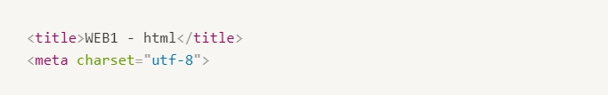
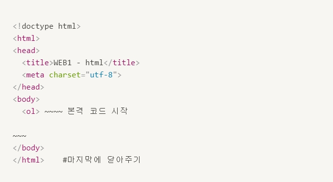

- strong, u, h1~h6
- br, p
- img, src, 크기조정 width
- li, ul
- 글의 구조 : title, head, body, html, !doctype html
- a, href, target
- 웹사이트 만들기
글의 구조 : title, head, body, html, !doctype html
- title : 제목 지정,
검색엔진이 웹페이지를 분석할 때 가장 중요하게 생각하는 태그
만약 문자가 깨진다면?
웹페이지를 UTF-8로 저장했다면
웹페이지를 열 때도 UTF-8 방식으로 해석해서 열어야 한다.
>> 웹페이지가 저장된 문자 표현 방식과 웹브라우저가 웹페이지를 해석하는 방법이 일치하지 않을 때 발생
따라서 다음과같은 코드 추가

이 코드들은 본문 자체가 아니라 본문을 설명하는 정보.
- body : 본문 내용 태그
- head : 본문을 설명하는 태그
- html : body 태그와 head 태그를 감싸는 하나의 태그
- !doctype html : 웹페이지가 html로서 만들어졌다는 것을 표현하기 위해 문서 시작에 추가
